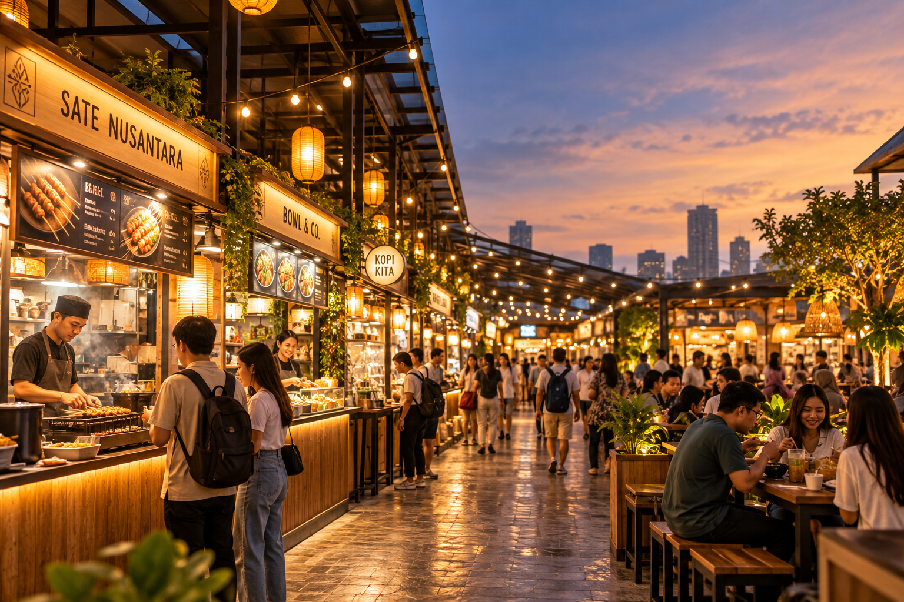
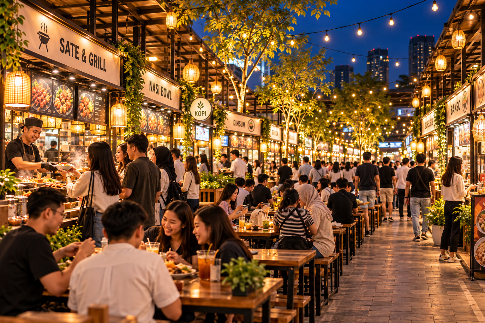
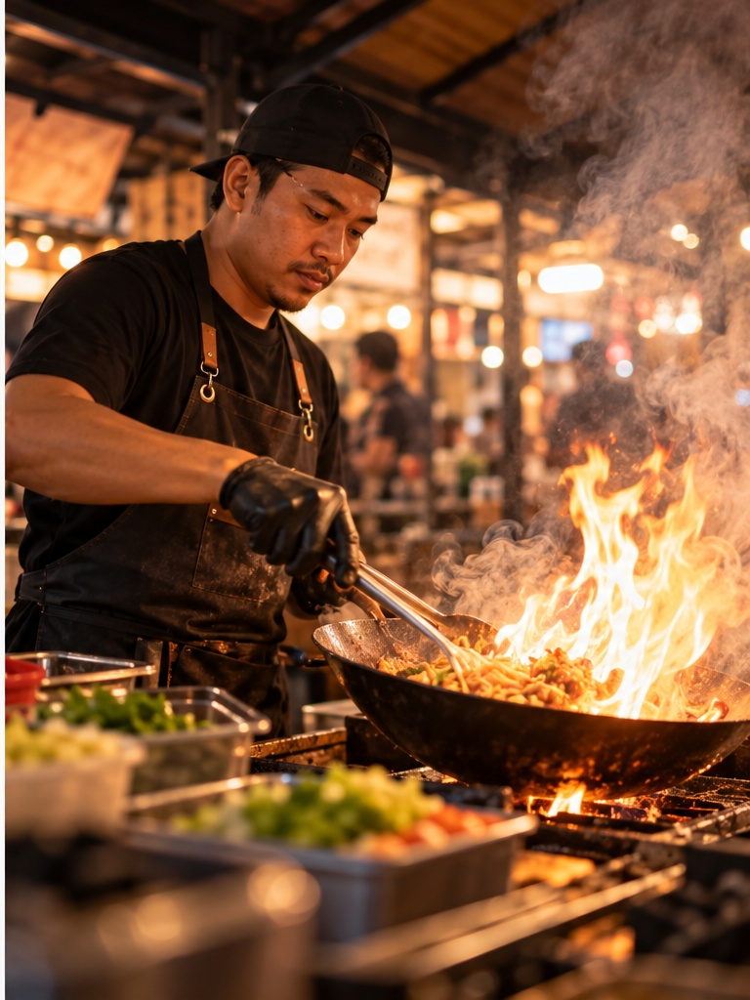
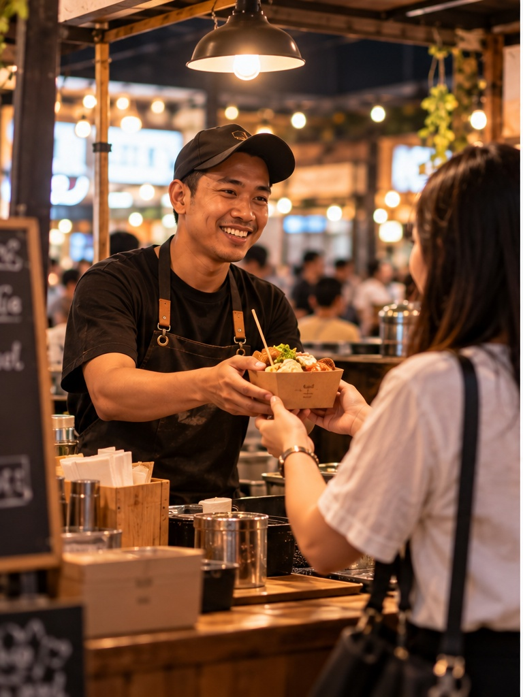
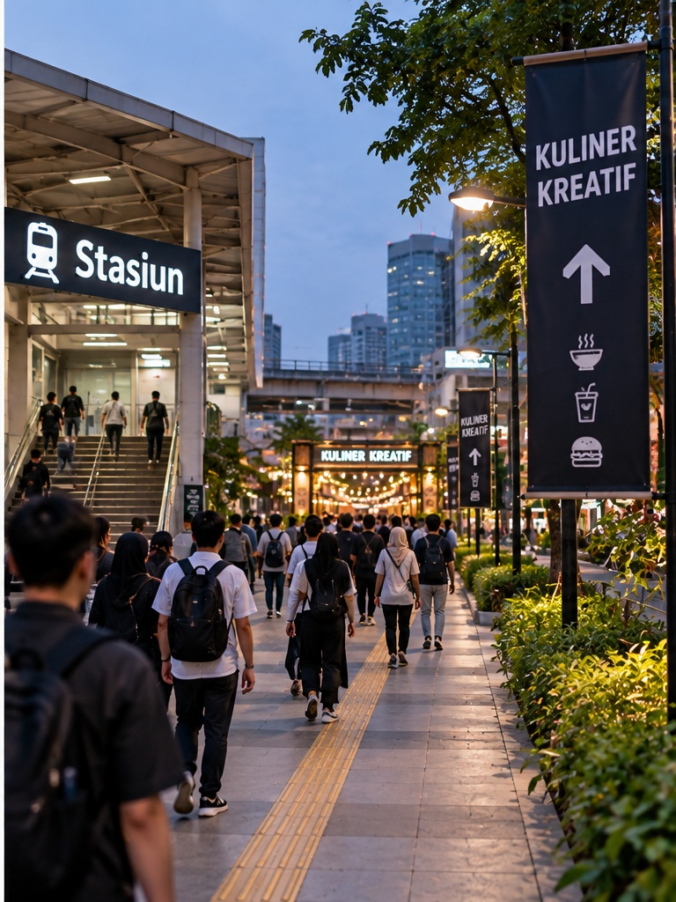

Pilih rasa
Cari tenant dari kategori atau nomor booth.
Gondangdia · Jakarta Pusat
Jajanan pilihan, pedagang lokal, dan suasana selepas kerja—dirangkum dalam satu lorong yang nyaman untuk semua.



“Bukan sekadar tempat makan. Ini ruang untuk bertemu rasa dan orang di baliknya.”
KapanJumat, 30 Oktober 2026
Di manaLorong Srikaya, Gondangdia
TiketGratis untuk semua
Pilihan dari lorong
24 tenant lokal yang dipilih karena rasa, cerita, dan konsistensinya.

Satu lorong, banyak rasa
Booth tersusun berurutan di dua sisi lorong. Cari nomor tenant, pesan, lalu nikmati suasana di area duduk bersama.
Buka denah lengkap →Cari tenant dari kategori atau nomor booth.
Datangi booth dan pesan ke penjualnya.
Makan di area bersama atau bawa pulang.
Datang ke titik
Masuk dari Jl. Srikaya II, lalu ikuti penanda berwarna biru. Kami menyarankan datang dengan transportasi umum.
Buka petunjuk arah
Jalan kaki ±5 menitUntuk pedagang lokal
Kami mencari tenant dengan produk kuat, pelayanan rapi, dan cerita yang nyata.
Ajukan tenant Pendaftaran membutuhkan ±5 menit